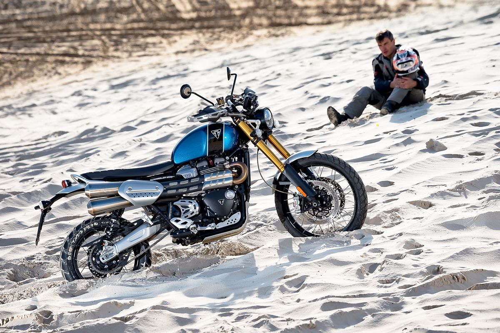
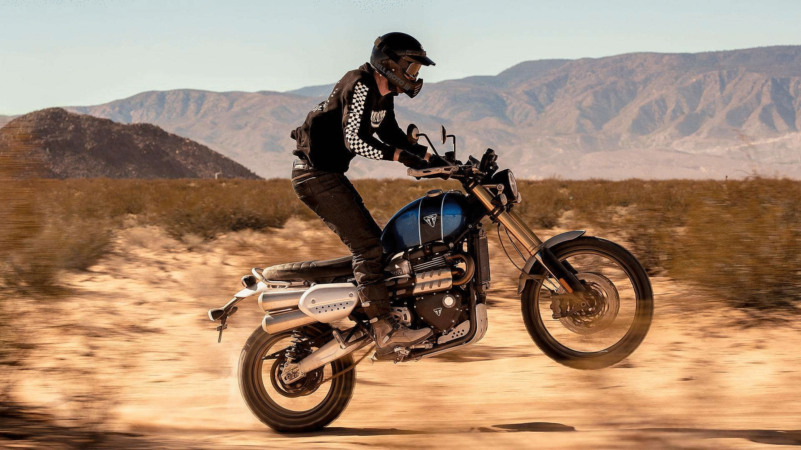

PNG (англ. portable network graphics) — растровый формат хранения графической информации, использующий сжатие без потерь.
Область применения
Формат PNG спроектирован для замены устаревшего и более простого формата GIF, а также, в некоторой степени, для замены значительно более сложного формата TIFF.
Формат PNG позиционируется прежде всего для использования в Интернете и редактирования графики.
PNG поддерживает три основных типа растровых изображений:
Полутоновое изображение (с глубиной цвета 16 бит)
Цветное индексированное изображение (палитра 8 бит для цвета глубиной 24 бит)
Полноцветное изображение (с глубиной цвета 48 бит)
Формат PNG хранит графическую информацию в сжатом виде.
Причём это сжатие производится без потерь, в отличие, например, от JPEG с потерями. Формат PNG обладает более высокой степенью сжатия для файлов с большим количеством цветов, чем GIF, но разница составляет около 5-25 %, что недостаточно для абсолютного преобладания формата, так как небольшие 2-16-цветные файлы формат GIF сжимает с не меньшей эффективностью.
PNG является хорошим форматом для редактирования изображений, даже для хранения промежуточных стадий редактирования, так как восстановление и пересохранение изображения проходят без потерь в качестве.

JPEG ( англ. Joint Photographic Experts Group, по названию организации-разработчика) — один из популярных графических форматов, применяемый для хранения фотоизображений. Файлы, содержащие данные JPEG, обычно имеют расширения .jpeg, .jfif, .jpg, .JPG, или .JPE. Алгоритм JPEG позволяет сжимать изображение как с потерями, так и без потерь. Алгоритм JPEG в наибольшей степени пригоден для сжатия фотографий и картин, содержащих реалистичные сцены с плавными переходами яркости и цвета. Наибольшее распространение JPEG получил в цифровой фотографии и для хранения и передачи изображений с использованием сети Интернет. С другой стороны, JPEG малопригоден для сжатия чертежей, текстовой и знаковой графики, где резкий контраст между соседними пикселами приводит к появлению заметных артефактов. Такие изображения целесообразно сохранять в форматах без потерь, таких как TIFF, GIF или PNG. JPEG (как и другие методы искажающего сжатия) не подходит для сжатия изображений при многоступенчатой обработке, так как искажения в изображения будут вноситься каждый раз при сохранении промежуточных результатов обработки. JPEG не должен использоваться и в тех случаях, когда недопустимы даже минимальные потери, например, при сжатии астрономических или медицинских изображений. К недостаткам сжатия по стандарту JPEG следует отнести появление на восстановленных изображениях при высоких степенях сжатия характерных артефактов: изображение рассыпается на блоки размером 8x8 пикселов (этот эффект особенно заметен на областях изображения с плавными изменениями яркости), в областях с высокой пространственной частотой (например, на контрастных контурах и границах изображения) возникают артефакты в виде шумовых ореолов. Однако, несмотря на недостатки, JPEG получил очень широкое распространение из-за достаточно высокой степени сжатия, поддержке сжатия полноцветных изображений и относительно невысокой вычислительной сложности.
Хотя GIF-файлы отлично подходят для анимации шуток, в наши дни они не очень хороши. Анимированные GIF-файлы в Twitter больше не являются даже GIF-файлами! Это файлы WebM. Потому что правда в том, что GIF никогда не были предназначены для анимации. Они создают исключительно большие размеры файлов. Чем больше кадров, тем хуже становится. Если вы переключитесь на файл WebM, у вас будет файл, который будет в 9 раз меньше и намного качественнее . MP4 — еще одна жизнеспособная опция, совместимая со всеми браузерами. GIF-файлы имеют ограниченную цветовую палитру из 256 цветов и используют сжатие без потерь. Но так же, как и файлы PNG-8, и с гораздо меньшим размером файла, и они также имеют прозрачность. Так что, возможно, единственный вариант использования GIF — это когда вы пытаетесь создать что-то, совместимое со старыми браузерами, которые не поддерживают HTML 5, выглядят плохо или специально для ностальгического эффекта .

Было бы замечательно, если бы мы могли объединить лучшее из PNG и JPEG. Google подумал о том же и изобрел формат WebP с открытым исходным кодом. Огромные сайты, такие как YouTube и eBay, уже начали использовать его для повышения эффективности сайта. Существует два вида изображений WebP. Один из них известен просто как WebP и использует сжатие с потерями. Вы можете думать об этом как о версии JPEG формата WebP. Когда вы создаете WebP с потерями в такой программе, как Photoshop, вы можете выбрать степень сжатия. Другая версия известна как WebP Lossless и больше похожа на PNG. Вы получите больший размер файла, но не потеряете детализацию. Оба типа форматов WebP создают изображение, которое намного меньше, чем их аналоги JPEG и PNG. Сколько именно? Согласно данным Google , в среднем изображения WebP на 25-34% меньше, чем сопоставимые JPEG, и на 26% меньше, чем сопоставимые PNG. Что касается создания файлов WebP для WordPress, вы можете использовать плагин. Фактически, Smush Pro CDN конвертирует изображения в WebP . Если кто-то посещает ваш сайт в браузере, поддерживающем WebP, Smush преобразует ваши изображения и обслуживает изображения WebP. Если они используют браузер, который не поддерживает WebP, они получат ваш ежедневный JPEG или PNG.